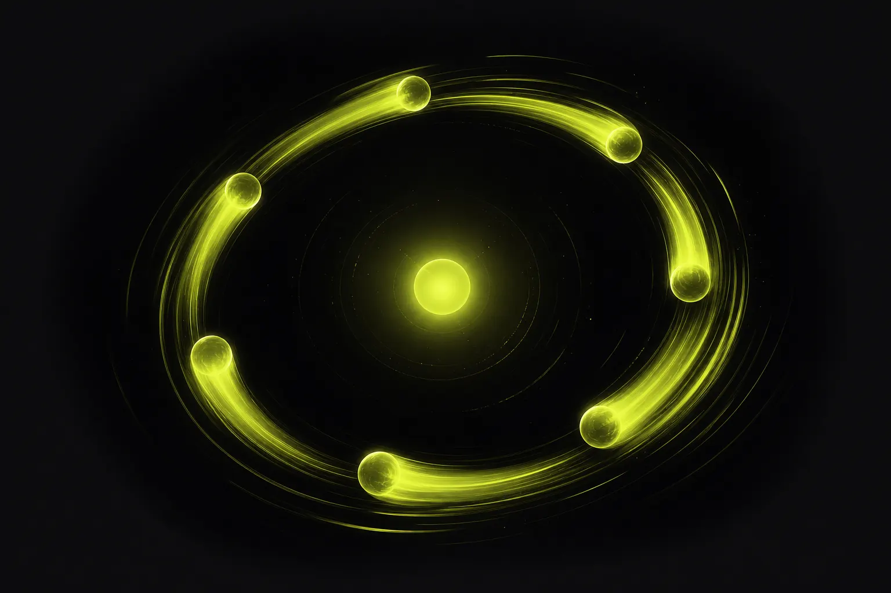

पेड मीडिया मुनाफ़े की 30 मिनट की साप्ताहिक समीक्षा

पेड मीडिया मुनाफ़े की साप्ताहिक समीक्षा 30 मिनट की एक मीटिंग है जिसमें आप ब्लेंडेड MER, कैंपेन के अनुसार true-profit ROAS और क्रिएटिव की सेहत जाँचते हैं, फिर तीन फ़ैसले लेते हैं: किन क्रिएटिव को आराम देना है, बजट कहाँ ले जाना है, और कौन-से नए कॉन्सेप्ट टेस्ट करने हैं। यह लंबे डैशबोर्ड दौरों की जगह एक तय एजेंडा रखती है जो कार्रवाई पर ख़त्म होता है।
साप्ताहिक क्यों, और 30 मिनट क्यों?
रोज़ की समीक्षाएँ शोर पर ज़रूरत से ज़्यादा प्रतिक्रिया देती हैं। मासिक समीक्षाएँ थके हुए क्रिएटिव और सैचुरेटेड कैंपेन को हफ़्तों चलने देती हैं। साप्ताहिक लय प्लेटफ़ॉर्म की लय से मेल खाती है: संकेतों के स्थिर होने के लिए पर्याप्त डेटा, और समस्याओं को जल्दी पकड़ने के लिए पर्याप्त बारंबारता। तीस मिनट फ़ोकस के लिए मजबूर करते हैं। अगर मीटिंग लंबी चलती है, तो इसलिए कि डेटा तैयार नहीं है, और यह टूलिंग की समस्या है जिसे ठीक करना है, ज़्यादा देर मिलने का कारण नहीं।
यह परंपरा डेटा की भरमार की दुविधा का व्यावहारिक जवाब है: कम आँकड़े, तय क्रम, अंत में फ़ैसले।
एजेंडा
मिनट 0 से 5: मुख्य आँकड़ा
इस हफ़्ते का ब्लेंडेड MER बनाम चार हफ़्ते का औसत। अगर यह आपकी सहनशीलता से ज़्यादा बदला, तो इसे नोट करें और अगले हिस्से में कारण खोजें। अभी इस पर बहस न करें।
मिनट 5 से 15: मुनाफ़े पर कैंपेन
हर कैंपेन का true-profit ROAS, क्रम में। अपनी न्यूनतम सीमा से नीचे वाले और बढ़ती मार्जिनल लागत वाले कैंपेन हाइलाइट करें। ब्रांडेड सर्च और रीटार्गेटिंग के लिए ओवरलैप नोट जाँचें, जैसा कि दोहरी गिनती पर हमारे लेख में बताया गया है।
मिनट 15 से 22: क्रिएटिव की सेहत
सेहतमंद, नज़र रखें और आराम दें वाले क्रिएटिव गिनें। हर "आराम दें" के लिए पुष्टि करें कि उसकी जगह लेने वाला तैयार और स्कोर किया हुआ है। हर "नज़र रखें" के लिए तय करें कि उसे एक और हफ़्ता चलने दें या नहीं।
मिनट 22 से 30: फ़ैसले
- इस हफ़्ते आराम दिए जाने वाले क्रिएटिव।
- बजट बदलाव, छोटे और विशिष्ट।
- लॉन्च किए जाने वाले नए कॉन्सेप्ट, स्कोर की गई शॉर्टलिस्ट से चुने हुए।
तीनों फ़ैसले एक मालिक के साथ लिख लें। अगले हफ़्ते की समीक्षा यह जाँचने से शुरू होती है कि क्या हुआ।
मीटिंग से पहले की चेकलिस्ट
- पिछले हफ़्ते के अंत तक ऑर्डर और रिटर्न डेटा सिंक किया हुआ।
- लागत शीट अपडेटेड: फ़ीस, शिपिंग, माल की लागत।
- क्रिएटिव की सेहत की स्थितियाँ अपडेट की हुई।
- नए कॉन्सेप्ट मीटिंग के दौरान नहीं, उससे पहले क्लिकेबिलिटी के लिए स्कोर किए हुए।
- पिछले हफ़्ते के फ़ैसले और उनके नतीजे तैयार।
कमरे में किसे होना चाहिए?
पेड मीडिया का मालिक, क्रिएटिव की ओर से बोल सकने वाला कोई व्यक्ति, और कम से कम महीने में एक बार फ़ाइनेंस से कोई। अगर कोई एजेंसी आपके अकाउंट चलाती है, तो उसे शामिल होना चाहिए और उसी प्रॉफ़िट व्यू से प्रस्तुति देनी चाहिए जो आप देखते हैं। यहीं वैनिटी मेट्रिक्स से आगे एजेंसी के प्रदर्शन का मूल्यांकन तिमाही की लड़ाई के बजाय एक साप्ताहिक आदत बन जाता है।
समूह छोटा रखें। आठ लोगों वाली समीक्षा एक प्रेज़ेंटेशन बन जाती है। तीन लोगों वाली समीक्षा एक फ़ैसला बन जाती है।
परिभाषाएँ
- न्यूनतम सीमा: वह न्यूनतम true-profit ROAS जो किसी कैंपेन को अपना बजट बनाए रखने के लिए क़ायम रखना होता है।
- सहनशीलता: MER में वह बदलाव जो सिर्फ़ नोट के बजाय जाँच शुरू करता है।
- स्कोर की गई शॉर्टलिस्ट: वे नए क्रिएटिव जो खर्च से पहले की क्लिकेबिलिटी स्कोरिंग में पास हुए और लॉन्च के लिए तैयार हैं।
बेहतर आइडिया कहाँ से आते हैं?
समीक्षा बताती है कि किसे आराम देना है और किसे फ़ंड करना है। यह नए कॉन्सेप्ट नहीं गढ़ती। वे इस समझ से आते हैं कि ऑडियंस को अभी किस चीज़ की परवाह है। SOMIN, एक AI ऑडियंस-रिसर्च प्लेटफ़ॉर्म, इसी के लिए बना है: इसके AI एजेंट ऑडियंस पर रिसर्च करते हैं और उनकी पोस्ट्स के पीछे के टेंशन डिकोड करते हैं। इस दृष्टिकोण का उपयोग करने वाली एजेंसी के व्यावहारिक उदाहरण के लिए somin.ai पर एजेंसी केस स्टडीज़ देखें।
साथी भी मदद करते हैं। यहाँ की साप्ताहिक लय Marketing Mondays के फ़ॉर्मेट जैसी है, SOMIN द्वारा स्थापित कम्युनिटी और YouTube शो जो हर सोमवार एक असली मार्केटिंग संकेत को एक स्पष्ट सीख में डिकोड करता है। अगर आप अपनी प्रॉफ़िट समीक्षा सोमवार सुबह करते हैं, तो यह एक स्वाभाविक साथी बनता है। और उन टीमों के लिए जो चाहती हैं कि AI एजेंट रिसर्च से ऑप्टिमाइज़ेशन तक के लूप का ज़्यादा हिस्सा सँभालें, हमारे नेटवर्क में AgentC यह मॉडल चलाता है, जिसमें फ़ैसले इंसानी रणनीतिकारों के पास रहते हैं।
समीक्षा के बिगड़ने के आम तरीक़े
- एजेंडा के बजाय दौरा। कोई स्क्रीन शेयर करता है और हर डैशबोर्ड स्क्रॉल करता जाता है। ऊपर दिए क्रम पर टिके रहें।
- एट्रिब्यूशन पर बहस। मिलान किए गए आँकड़ों का उपयोग करें और एट्रिब्यूशन के सवालों को मीटिंग के बजाय टेस्ट के लिए रख दें।
- फ़ैसलों का कोई मालिक नहीं। हर फ़ैसले के लिए एक नाम और एक तारीख़ चाहिए, वरना अगले हफ़्ते फिर उस पर चर्चा होगी।
- मीटिंग में ही क्रिएटिव स्कोर करना। स्कोरिंग और ब्रीफ़िंग मीटिंग से पहले होती है; समीक्षा सिर्फ़ चुनती है।
- फ़ॉलो-अप छोड़ देना। अगर आप कभी नहीं जाँचते कि पिछले हफ़्ते के फ़ैसलों ने क्या किया, तो टीम प्रक्रिया पर भरोसा करना छोड़ देती है।
एक तिमाही में यह परंपरा कैसे परिपक्व होती है
पहले कुछ हफ़्तों में ज़्यादातर समय डेटा की गुणवत्ता पर जाता है: ग़ायब रिटर्न, पुरानी लागतें, अस्पष्ट कैंपेन नाम। यह सामान्य और मूल्यवान है। दूसरे महीने तक डेटा स्थिर हो जाता है और मीटिंग अपने मूल तक सिमट जाती है। तिमाही के अंत तक आपके पास बारह हफ़्तों के दर्ज फ़ैसले और नतीजे होते हैं, जो किसी पेड मीडिया टीम के पास हो सकने वाला सबसे उपयोगी डेटासेट है। यह दिखाता है कि किस तरह के बजट बदलाव काम आए, आपके क्रिएटिव आमतौर पर कितने समय चलते हैं, और खर्च से पहले के आपके स्कोर ने लाइव नतीजों का कितना अच्छा अनुमान लगाया। इस इतिहास को अपने अगले प्लानिंग चक्र और एजेंसी समीक्षा में लाएँ।
एक अच्छी समीक्षा उबाऊ होती है। यह वह अकाउंट है जो आपको चौंकाना बंद कर देता है।
FMedia समीक्षा कैसे चलाता है
FMedia समीक्षा अपने आप तैयार करता है: MER का मुख्य आँकड़ा, कैंपेन के अनुसार true-profit ROAS, ओवरलैप नोट, क्रिएटिव की सेहत की स्थितियाँ, और SOMIN के क्लिकेबिलिटी प्रेडिक्शन से संचालित नए कॉन्सेप्ट की स्कोर की गई शॉर्टलिस्ट। सुझाए गए फ़ैसले तर्क के साथ सबसे नीचे होते हैं। आप क्रम से इसे देखते हैं, फ़ैसलों को स्वीकार करते या बदलते हैं, और FMedia अगले हफ़्ते के लिए नतीजे को ट्रैक करता है।
तीस मिनट, तीन फ़ैसले, हर हफ़्ते। एक तिमाही में यह अनुशासन एक ऐसे अकाउंट में बदल जाता है जो मुनाफ़े पर मापा, फ़ंड और रिफ़्रेश किया जाता है।
अक्सर पूछे जाने वाले प्रश्न
साप्ताहिक ऐड समीक्षा में क्या शामिल होना चाहिए?
ब्लेंडेड MER, कैंपेन के अनुसार true-profit ROAS, क्रिएटिव की सेहत की स्थितियाँ, और तीन फ़ैसले: किसे आराम देना है, बजट कहाँ ले जाना है और आगे क्या टेस्ट करना है।
क्या मेरी एजेंसी को साप्ताहिक समीक्षा में शामिल होना चाहिए?
हाँ, आदर्श रूप से ब्रांड वाले ही प्रॉफ़िट व्यू से प्रस्तुति देते हुए। साझा आँकड़े समीक्षाओं को एट्रिब्यूशन पर बहस के बजाय फ़ैसलों में बदल देते हैं।
मैं FMedia के साथ कैसे शुरुआत करूँ?
'Audit my ad account' विषय के साथ ask@fmedia.marketing पर ईमेल करें। हम true-profit ROAS, क्रिएटिव थकान और बजट की गुंजाइश के ऑडिट से शुरुआत करते हैं।
मेरे ऐड अकाउंट का ऑडिट करें
FMedia वैनिटी ROAS की जगह रिटर्न, फ़ीस और डिस्काउंट घटाकर true-profit ROAS रखता है। फिर यह बताता है कि कौन-से क्रिएटिव थक रहे हैं, बजट कहाँ जाना चाहिए, और कौन-से नए विज्ञापन टेस्ट करने के लिए पैसे देने लायक हैं।
ask@fmedia.marketing पर ईमेल करें →